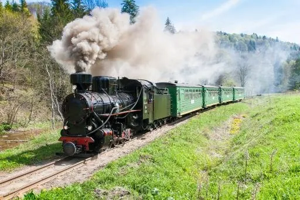

3 dni · wycieczka szkolna wielodniowa · program do modyfikacji
Bieszczady, 3 dni
Miejsce szczególne: niezwykłe góry, niepowtarzalne połoniny, kolejka wąskotorowa, drezyny rowerowe, ikonopisarstwo. Przykładowy program, który dostosujemy do Waszych możliwości.
Cena indywidualnadla grupy


Czas trwania3 dni, 2 noclegi
Noclegośrodek wypoczynkowy, Zatwarnica
Wyżywienieśniadania i obiadokolacje
Cenaindywidualnie dla grupy
Program
- Dzień 1. Wyjazd w godzinach porannych, zwiedzanie Muzeum Przemysłu Naftowego im. Ignacego Łukasiewicza w Bóbrce, przejazd do Zatwarnicy, zakwaterowanie w ośrodku wypoczynkowym, obiadokolacja, ognisko z kiełbaskami, nocleg.
- Dzień 2. Śniadanie, wycieczka z przewodnikiem górskim na Połoninę Wetlińską do legendarnej Chatki Puchatka, najwyżej położonego schroniska w Bieszczadach, dalsze przejście połoniną, zejście do Wetliny lub Zatwarnicy, obiadokolacja, nocleg.
- Dzień 3. Śniadanie, przejazd nad Solinę, rejs statkiem po Solinie, przejazd do Sanoka i zwiedzanie Parku Etnograficznego. Powrót w godzinach wieczornych.
Świadczenia
- Transport autokarem klasy turystycznej (DVD, klimatyzacja).
- Nocleg, standard do uzgodnienia.
- Wyżywienie (śniadanie, obiadokolacja), do uzgodnienia.
- Opieka pilota wycieczek i przewodnika górskiego podczas wycieczek górskich.
- Bilety wstępu do zwiedzanych obiektów według programu.
- Ubezpieczenie NNW (opcjonalnie).
Cena przygotowywana jest indywidualnie dla danej grupy i zależy m.in. od liczby osób, terminu wycieczki i wybranych świadczeń. W celu przygotowania oferty prosimy o kontakt.
Nasze dodatkowe propozycje
- Przejazd kolejką wąskotorową.
- Wycieczka drezynami rowerowymi.
- Wizyta w Galerii Zdzisława Beksińskiego w Muzeum Historycznym w Sanoku.
- Wycieczka górska na Tarnicę, najwyższy szczyt Bieszczadów.
- Wycieczka górska na Bukowe Berdo.
- Wycieczka górska na Małą i Wielką Rawkę.